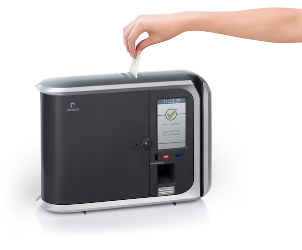

Sobre
Somos uma empresa brasileira, fabricante de relógios de ponto eletrônico e catracas para controle de acesso, fundada há mais de 20 anos. Com a proposta de ser uma empresa de tecnologia de ponta, utilizamos os mais modernos conceitos de administração de forma a garantir uma equipe de funcionários motivados, alta qualidade dos produtos e custos de produção otimizados.
Produto
Inner Rep Plus

Caracteristicas
- O relógio de ponto eletrônico Inner Rep Plus é um produto homologado pelo MTE e pelo INMETRO.
- O Inner REP Plus permite o controle de ponto para todos os portes de empresas, oferecendo segurança jurídica para o empregador, facilitando a gestão de recursos humanos e garantindo o controle fiel das marcações dos empregados.
- O empregado registra o ponto usando seu cartão de identificação, por biometria ou ainda pelo teclado sensível ao toque;
- O REP armazena esse registro na memória e imprime o comprovante do trabalhador com assinatura digital que impede sua falsificação;
- Por fim o relógio permite exportar as marcações para tratamento no sistema de controle de ponto pela rede de dados ou pela porta USB auxiliar.
- O MTE fiscaliza os registros de ponto eletrônico, coletando as marcações registradas na memória do equipamento através de um pendrive conectado à porta USB Fiscal.
Para saber mais acesse: TopData
Por que usar um relógio de ponto eletrônico homologado ?
Desde 01 de março de 2011 é exigido pelo Ministério do Trabalho que, empresas que registram o ponto de seus funcionários de maneira eletrônica, utilizem relógios homologados pelo Ministério e atualmente é obrigatório que os fabricantes produzam relógios aprovados pelo INMETRO para garantir que apresentem requisitos mínimos para que registrem fielmente as marcações de ponto.